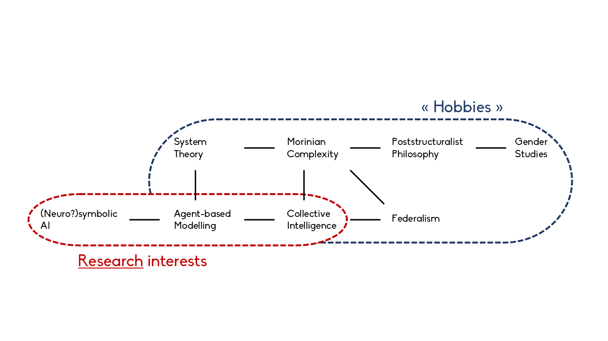

<-- It seems to me that every researcher's handmade webpage includes a ridiculously small picture of themself, so here is mine.
<-- It seems to me that every researcher's handmade webpage includes a ridiculously small picture of themself, so here is mine.
My name is Maurin (first name) Gilles (last name). I am currently pursuing my last year as a student at ISIMA, an engineering school in computer science located in Clermont-Ferrand, France. My cursus includes internships, and from April to September 2026 I am doing one at Ruhr University Bochum, in the research group "Reasoning, Rationality, Science". Supervised by Dr Dunja Šešelja and Dr Christian Straßer, I am working on Argumentative Agent-Based Models, a topic combining epistemology, formal logic and programming in Julia. I will graduate in October 2026 and my goal is to pursue a PhD afterwards. I am actively looking for a position, and am more generally open to any interesting opportunity :)
During my academic cursus I specialised in AI, Optimisation, Data Science and Scientific Computing. However, I am driven by a major interest in Humanities - especially Philosophy - and I would like to flavour my research with a touch of interdisciplinarity.
The present page is organised as follows:
This is a GitHub page powered by my presently very underutilised html/css skills. I try my best to write according to the spelling of my British neighboUrs. If you use a Chromium-based browser, you probably read this text in my cherished Biko font. The background image is the painting "La Leçon au jardin" by Berthe Morisot. (You can admire it scrolling all the way down.)
Tel: (+33) 6 95 01 26 80
Email: maurin.gilles@outlook.fr
Email (school): maurin.gilles@etu.uca.fr
GitHub: github.com/mauringls.
Letterboxd (importantly): letterboxd.com/mauringilles/.
A few documents that may be of interest:
My "industry-style" CV: here
My academic CV: here
A translation of my transcripts with a description of every course I have attended: here
My original transcripts in French: here

I majored in computer science, and my research will probably never fully leave this field. Nevertheless, I feel mainly drawn to interdisciplinary topics, and especially those that connect AI and computer simulation with other sciences (physics, cognitive science, sociology) and my interests in political/social philosophy.
I like to think of society as a complex system in Edgar Morin's sense, with several intrications between the individual and the global scales, driven by emerging phenomena, that can certainly not be reduced to optimisable functions. I want to study dynamics of groups thanks to model that forget neither the importance of individual reasoning, nor the particular properties of a society made of these individuals and influencing them in return.
Here are examples of questions I would typically be interested in working on:This is one of the two main projects I have been working on during my 5-months internship in the Research Unit for Robophilosophy & Integrative Social Robotics (RISR) at Aarhus University, Denmark. The most thorough description of the project for the moment is probably part 2 of my internship report. Hopefully, a real academic paper should be published the day the experiment is actually conducted.
To make a long story short: multiple experiments concur proving that prosocial behaviours have a positive influence on one's well-being. Other experiments in the field of psychology show that prosocial behaviours can be encouraged thanks to a motivational interview with a professional psychologist. The natural next step for a "robophilosophy" group is to study whether the psychologist can be an artificial agent in this motivational session. Research suggests that this may be possible, especially with resepect to the agent's level of sociomorphing - notion studied within the RISR research unit.
My main contribution to this project was to develop a chatbot for the purpose of this experiment (back, front, and network setting, using Python) and its embodiement into a Furhat robot, using the Furhat SDK in Kotlin.
This the second major project I worked on during my internship in the RISR research group, and a more throgouh description (including a short introduction to neural networks) is available in part 3 of my internship report.
The core idea of the project is to study the AI explainability problem from an angle focusing on the notion of intention. In particular, we are interested in eximining if and how Elisabeth Pacherie's model of intention in action can provide a relevant framework for theorical research on explainability. Our early work suggests that this goal may well associate with mechanistic interpretability, a subfield of explainability that aims to understand trained model through an a posteriori analysis of its parameters.
My internship was too short to start any concrete work, but I find the ideas we brought on the table fascinating and I intend to work this project further one day.
This project was part of a research initiation programme I attended during my second year at ISIMA. It led to this paper which is not intended to be published as such, but will probably be a basis for a future work by my supervisor. Compared to other research projects I worked on, this one falls in a very technical field of computer science that is query optimisation, which is hard to introduce without giving a whole course on the topic. The following abstract may therefore sound obnoxiously fuzzy for someone outside the field.
Query optimisation in Database Management Systems relies on statistics about data distribution in the sources to estimate an optimal plan to execute a query. In data integration, such statistics are often not available, and alternative techniques should be considered. The most efficient solutions in this field tend to have "dynamic" approaches, in which the missing statistics are computed during the query execution, in order to find a better plan to switch to during runtime. In this work, we have an overview of the issues and solutions existing for dynamic query optimisation in data integration systems. We focus more precisely on the join ordering problem, and how to estimate joins without initial knowledge on the sources. We propose a solution involving dynamic histograms, which provide decent estimates in this very constrained context.
This is a project I worked on as part of my master's degree, which was concluded with this paper.
By "triangular" grid, one can think of a regular tilting with equilateral triangles, and construct a finite graph taking a convex set of points located at the intersections as vertices, and their induced edges. In a theorical model, the robots are visiting a vertex at any point in time, and can move along one edge at each step of time. Solving the perpetual exploration problem means to find an algorithm where the sequence of positions of the robots on the grid is a cycle during which each vertex is visited at least once. Robots are luminous: they have a colour, can change its colour, and can identify colours of other robots within a certain distance. Colours are the only mean robots possess to communicate. To develop an algorithm means to define a set of rules embedded by the robots to solve the perpetual exploration.
The goal of our work on this project is to find optimal algorithms with respect to different parameters (number of robots, number of colours, vissibility range, robots' ability to orientate themselves), which implies to prove these algorithms sound, complete and optimal.
I was born in 2003 in Marseille, the most beautiful, exciting, vibrant, multicultural, and second largest city in France. Since 2019 I live in the charming yet slightly more boring Auvergne region.
I like to cook, although I eat vegetarian (with rare exceptions) and am therefore not good at most French specialities... I am also a wine enjoyer, always up for a bottle of Madiran or Crozes-Hermitage.
I play guitar and bass at an extremely amateur level, and I would like to seriously learn trumpet one day. On the listener side, I am mainly into French "chanson", jazz, opera and "classical" music, with a special burning love for Mendelssohn and Purcell. I will try to keep a track of what I attend here.
My main hobby besides reading is cinema. For the past four years, I volunteered during Clermont-Ferrand International Short Film Festival, the largest short-film festival in the world, that happens to take place in the city in which I study.
I am openly queer, and secretly a drag queen. I like to mix pronouns in my activist life, but casually use he/him.
I use Arch btw.